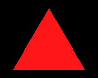
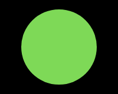
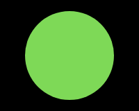

We use this test to assess how monkeys categorize objects. There are 4 categories: birds, fish, flowers, and people. Each category is matched with an arbitray symbol, much as we match categories with arbitray strings of letters (e.g., a bird is matched with the letter sequence "bird"). How fast can you learn which symbol corresponds to each category? After learning the categories, how well would you do with new images from the same category? What would it mean about the way you were solving the task if you had to relearn each new image?
Categorization Test
Percent Correct: 0.00%



 
